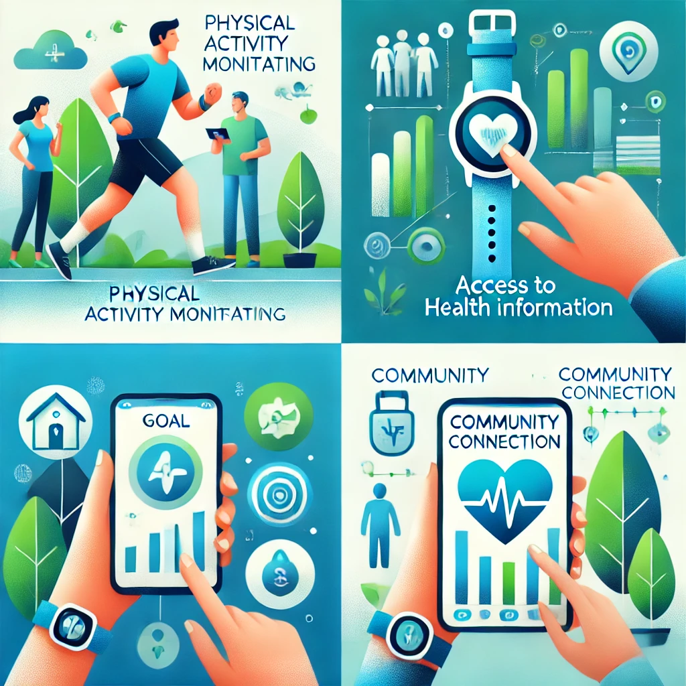

Benefícios do Uso da Tecnologia

Monitoramento Constante
Com a tecnologia, é possível monitorar sua saúde e bem-estar constantemente, como frequência cardíaca e nível de atividade física.

Acesso a Informações
Aplicativos e plataformas digitais oferecem fácil acesso a informações confiáveis sobre saúde e bem-estar.

Motivação e Metas
Defina metas personalizadas e acompanhe seu progresso. Notificações diárias ajudam a manter a motivação alta.

Conexão com Comunidades
Interaja com comunidades online, compartilhe conquistas e aprenda com outras pessoas.